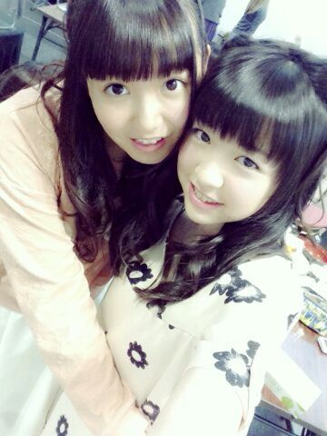

| 2014/04 11 Fri | ひめたん(*>ω<*)そ の432 |
可愛い可愛い妹ちゃーん黒猫ちゃん( ^O^ )

今週末の全握は
かなりん (中田花奈ちゃん)とぺあ！
かなりん、かなりんファンのみなさん
よろしくお願いします(＊^^＊)
かなりんとはよく一緒になるから
お久しぶりの方多いのかなー
ひめたんとも仲良くしてくださいな＊＊
それから、5/3のアンダーライブ
追加募集のお知らせが
公式サイトで発表されました！
ゴールデンウィークの
忙しい時期ではありますが
ぜひ遊びに来てください(´；ω；｀)
アンダーメンバーのファンのみなさんなら
絶対楽しんでもらえるライブにするからね！
今週末のアンダーライブの詳細も
公式サイトで発表されたので
参加するよーって方はよろしくお願いします
楽しみにしててねー＼(^O^)／
そして火曜日は
オフィス男闘呼塾エンターテインメント Presents
氣志團現象2014
「極東ロックンロール・ハイスクール 第弐章」
#34 乃木坂46 vs 氣志團 〜学生服反逆同盟〜
もあります＼(^O^)／
ライブ楽しみ楽しみー♪

なくなっていた
ぱんださんスマホカバーが
半年ぶりに見つかったー＼(^o^)／

 小さい頃夏に家に来たお中元を見て
小さい頃夏に家に来たお中元を見て
「えっ、おなかもとって何？」って勘違いして
お母さんに聞いたらめっちゃ笑われて
そこで初めてお中元というものを教わって
また一つ賢くなっちゃったってへっみたいな感じの
超絶面白いエピソード教えてください。。。
大した話では全然ないんだけど
小児科を「こじか」って読んで
けらけら笑われたことならありましたねー
懐かしい......(´ω｀)
ひめたんは自分にできるとしたら
妹、弟、姉、兄、豚骨ラーメン(濃厚)
この内誰がいい？
おにーちゃん！
きゅんきゅん王国の課税制度って、累進課税？
なんのことをいってるのか
17さいのひめたんには
さっぱりいみがわからないにゃー(´-ω-`)
私。学校の修了式の日にひとことで
ひめたんビームやったら、うけたよー♪
ひめたんも一緒に喜んでくれる？？笑
うけた？
いい意味って捉えていいのかな？
やったー＼(^o^)／ありがとう！
この前回転寿司に行って、
友人が食えるものがあまりないと言っていたので
「おまえはひめたんか！」と突っ込んだよ！
どう思いますか？w
残念ながら、ひめたんはお魚さん好きじゃないけど
お刺身は好きなんだよー(笑)
ねえねえ、夢でね、ひめたんと
同じクラスになってる夢見た！
でも、なぜか２人で怒られてた
絶対ひめたんのせいだよね？ねえねえねえねえ
身に覚えがないんですが
えへーなんでなんで
ひめたんのせいなのかな(＊>ω<＊)
私ボールペン使おうとして
インクが出なかったらすぐ他の使わず
インク出るまで頑張っちゃうんだけど
ひめたんはこういう時どうする？
あーもうすごく尊敬する
ひめたんは即刻捨てるひとなのー
一応振ってはみるけどね！
ひめたんの日記の
コメント欄下２ケタに46を踏んだ方へ
手書きでコメ返するコーナー
＼ ひめたん46 ／

いつもたくさんコメント
ありがとうございます
また時間をとって
ひとつひとつゆっくり読ませてください
いつかまとめて感想書くからねー♪♪
あっそれから
プレゼント受け取りましたっ
ありがとうございました！大事にします！
あしたいいことがありますように。
(＊´・ω・＊)
コメント(505)
2014/04/11 23:42